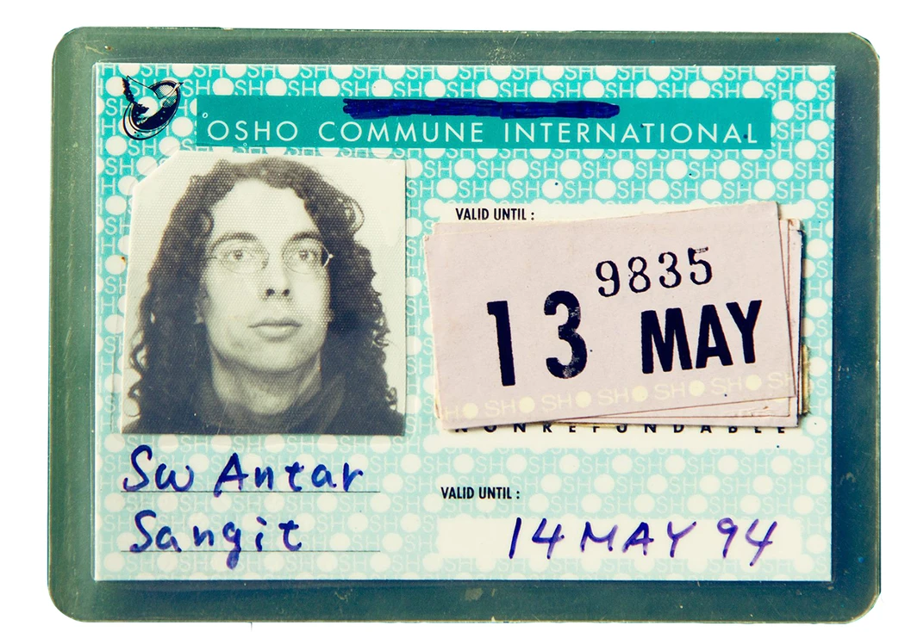
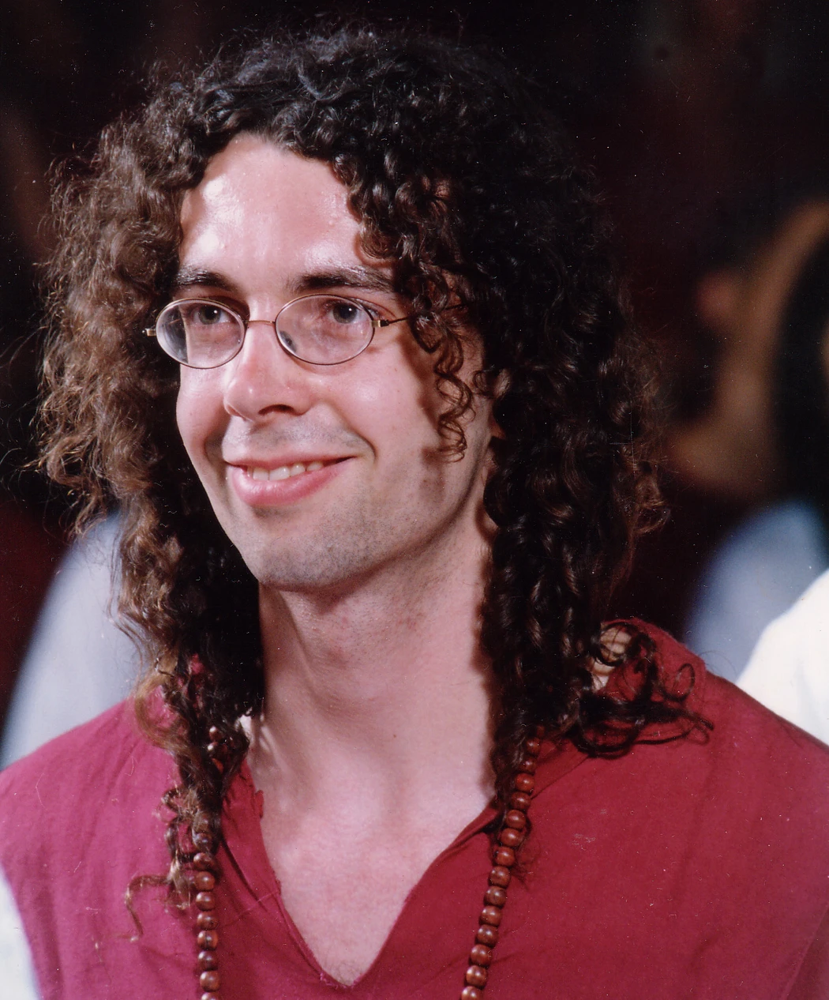
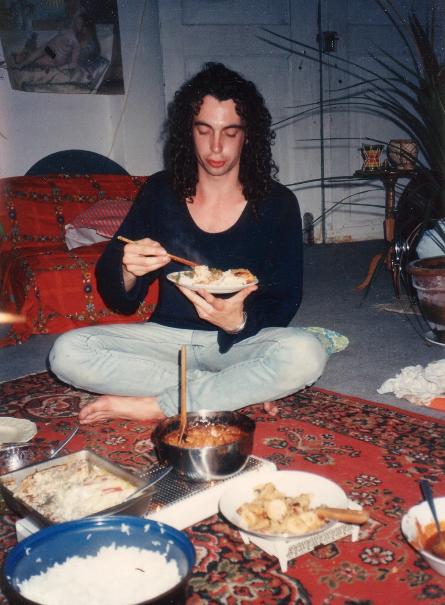
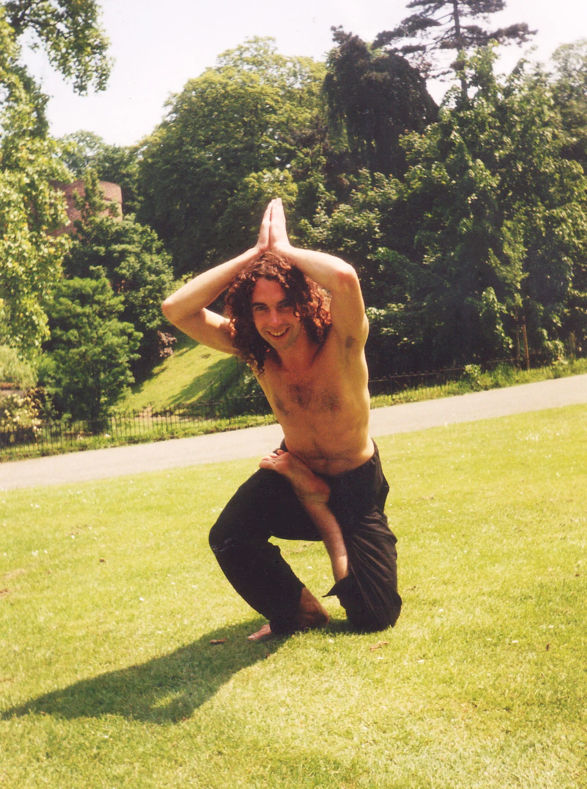

Je kent Raymond van Mil misschien als de man die je altijd hinderlijk hard in je gezicht flitst als je dronken op een feest staat, maar waarschijnlijk niet als swami Antar Sangit. Al 8 jaar lang fotografeert Raymond het nachtleven in met name Amsterdam. Hij is 46, en voordat hij met fotografie begon zag zijn leven er compleet anders uit. Zo sjokte hij niet door clubs om de hotste mensen en glibberigste moshpits vast te leggen, maar droeg hij soms een rood gewaad en sprong hij samen met honderden anderen wild ademend in het rond om in een trance te komen.
Raymond zat jarenlang bij de Bhagwan, de sekte waar de afgelopen weken veel over gepraat wordt vanwege de alom bejubelde en fantastische documentaireserie Wild Wild Country. (Opgepast, het interview bevat spoilers.)
VICE: Hey Raymond. Van Bhagwan-swami tot partyfotograaf – waar beginnen we?
Raymond van Mil: In Nijmegen. Ik was 20 en blowde al een aantal jaar behoorlijk veel. Tot ik op een dag spacecake had gegeten en in een bad trip van een paar dagen belandde. Ik kreeg angstaanvallen, elke dag wel een paar, en na een paar maanden werd het nog steeds niet beter. Toen ben ik hulp gaan zoeken en kwam ik terecht bij de moeder van een vriend van me – een zweverig type. Ik herinner me niet meer wat ze precies deed, maar het was een soort healingsessie, en toen ik daarna opstond voelde ik me opeens weer oké. Dat was het moment dat ik nieuwsgierig werd.
En toen?
Ik ben yogales gaan volgen van een Nepalees mannetje. Ik vond het fijn, maar ook stijfjes. Ondertussen waren vrienden van me fanatiek bezig met Osho, die kort daarvoor was overleden. [Bhagwan, later Osho geheten, was de goeroe die de Bhagwanbeweging stichtte; hij stierf in 1990].
Was je snel overtuigd dat dit ook jouw club was?
Nou, die vrienden zeiden: "Je moet aan dynamische meditatie doen. Dat is heel heftig ademhalen en wild bewegen, en zo." Ik woonde in een grote garage in Nijmegen en leefde van een uitkering, dus ik had alle tijd om dat te doen. Maandenlang, alleen in mijn garage, met behulp van een cd die ik had gekregen. Het veranderde mijn hele systeem.
Toen wist je: die Bhagwan, dat is mijn mannetje.
Ja. Mijn beste vriend ging naar India, en belde me op een gegeven moment op om te zeggen: "Man, je moet hier echt heen komen." Toen ben ik naar de ashram in Poona gegaan, voor vijf weken.
Schets even de situatie. Je komt aan in India, pakt de trein naar Poona…
Dan pak je een riksha naar de ashram. Daar was een ingang, een soort poort, waar ik me moest inschrijven. Ik moest ook een hiv-test doen. De aidsepidemie was volop gaande en niemand wist precies hoe en wat, dus testten ze voor de zekerheid iedereen. Uiteindelijk kreeg je een toegangspas.

De toegangspas waarmee Raymond de ashram binnen mocht
Hoe zag het er binnen uit?
Als een soort festivalterrein in de tropen. Er waren palmbomen, boekenwinkeltjes, een geweldige keuken, en een enorme meditatieruimte – een soort festivaltent. Slapen en eten deed je in de buurt van waar de ashram stond. De mensen die in dat stadsdeel van Poona woonden verhuurden hun huisjes.
Was dat hele ashramding geen geldklopperij?
Nee hoor, het kostte juist allemaal niks. Entree was geloof ik twee gulden vijftig. Boeken kocht je voor de inkoopsprijs. Het eten was ook goedkoop.
Wat deed je de hele dag?
Ik kocht 's ochtends ontbijt en een mango lassi en dan liep ik naar de ashram. Je kon cursussen doen, maar ik had geen geld, dus ik deed vooral de gratis dingen. Een beetje in de boekwinkel hangen, kletsen met andere mensen, mediteren, en boeken van Osho lezen natuurlijk. En iedere avond was er een grote meditatie die ik altijd meedeed, samen met zo'n duizend anderen. In de hele ashram zaten een stuk of vijftienhonderd mensen, het grootste deel kwam elke avond bijeen om te mediteren.
Hoe zat het met de seksuele moraal? Werd er in het openbaar geneukt zoals in Wild Wild Country veel wordt beweerd?
Dat was wel een beetje over toen ik er zat. Het was wel heel vrij allemaal, maar ik denk dat die openbare seks vooral heel erg jaren zeventig was.
Klinkt eigenlijk allemaal best saai: vijf weken lang hangen in boekwinkeltjes en mediteren.
Tja, sommige mensen kwamen daarheen om vrijheid te zoeken, maar ik was echt heel fanatiek bezig met mediteren. Ik wilde dat helemaal ontdekken.
Wat hielden die massameditaties in?
Osho onderwees in van alles. Soms was het zitten, soms een dynamische meditatie. Ik heb ook weleens lachmeditatie gedaan – dan ging je drie uur lang lachen, en dan een uur mediteren. Of gibberish, dan zit je drie kwartier lang allerlei klanken te maken die in je opkomen.
Bluehuahueeehuh bliiejoewhuuuaazoejoe…
Ja zo. Drie kwartier lang, en daarna ga je stilzitten. Dan is het stil in je hoofd, al die gekte weg. Het werkt als een tierelier.
Maar hoe werd je nou een swami?
Na een paar dagen besloot ik sannyas te doen. Dan word je dus officieel een volger en krijg je een andere naam. Ik moest een formulier invullen en vertellen wat ik deed. Ik was in die tijd veel bezig met muziek maken, dus mijn naam werd swami Antar Sangit. Dat betekent 'innerlijke muziek'.

Raymond tijdens zijn sannyas, waarbij hij veranderde in swami Antar Sangit
Was er een inwijdingsritueel?
Ja, tijdens de grote avondmeditatie. Op het tijdstip waarop Osho vroeger een lezing gaf werd er elke dag een video getoond, met daarna een meditatie. Meestal waren er een stuk of tien mensen die sannyas deden. Ik moest samen met de anderen in het middenpad op een rijtje zitten, en vervolgens kreeg iedereen van een leider een ketting omgehangen. Daarna kreeg ik mijn nieuwe naam in mijn oor gefluisterd.
"Congratulations, you are now swami Antar Sangit!"?
Zoiets ja. Het was heel symbolisch. Je hoefde hem ook niet te gebruiken, maar ik besloot dat wel te doen. Ik heb hem lang gehouden. Er zijn nu nog steeds wel mensen die me als Sangit kennen.
Hoe ging dat toen je weer thuiskwam? Dan kom je aan in Nederland en dan ben je opeens niet meer Raymond van Mil.
Ik zei tegen iedereen: voor mij is meditatie een serieuze zaak en ik heb sannyas genomen, dus zou je me voortaan zo willen noemen? De meeste mensen zijn dat toen gaan doen.
Het lijkt me toch een beetje een gek gesprek.
Een héél gek gesprek! Het is voor mij nu ook gek om erover na te denken. Maar ik vind het ook wel grappig dat ik er toen zo vol voor ging.
Dus dat was toen je roepnaam. "Sangit wil je ook een bakkie pleur?"
"Ey Sangit, telefoon!" Ja, precies zo.
En hoe waren de reacties? Wat zei je familie?
Mijn familie… Hmm… Die hebben dat… Nee. Mijn ouders zijn altijd heel begripvol geweest, maar ze hebben me nooit Sangit genoemd. Dat was een stapje te ver. Dat begreep ik toen ook wel.

Sangit eet een bordje rijst
Wat deed je na de ashram?
Ik ben in een Bhagwan-woongroep gaan wonen, in een groot huis in Beuningen, vlak bij Nijmegen. Er zaten daar flink wat mensen, ook gezinnetjes. We hadden een groentetuin, een meditatieruimte, we kookten samen biologisch voedsel. Elke week kwamen we bij elkaar in een kring, om te vertellen wat je bezighield en hoe je je voelde.
Wat deed je verder?
Niks. Tekenen, uitgaan, mediteren, muziek maken. Uiteindelijk ben ik er weggegaan omdat ik niet verder kwam. Ik ging Chinese geneeskunde studeren en ben me vol op tai chi gaan storten. Jarenlang. Ik deed ook mee aan wedstrijden.
Was je goed?
Ja, ik was goed. Ik ben een keer tweede geworden op het Europese toernooi pushing hands. Dat is een tak binnen tai chi – een soort sumoworstelen zonder slaan, waarbij je elkaar van een mat moet duwen. Ik heb er tien jaar les in gegeven.
Hoe ben je uiteindelijk weer Raymond van Mil geworden?
Toen ik een jaar of dertig was besefte ik dat Raymond, mijn echte naam, een bepaalde persoonlijke lading had die belangrijker was, en dat het tijd was om een periode af te sluiten. Ik ben me toen gaan verdiepen in de meditatiemethoden van twee leraren uit Koeweit. Uiteindelijk heb ik daarmee mijn eigen methode ontwikkeld.
Ho. Er is een Raymond van Mil-meditatiemethode?
Ja. Intrinsic Movement, heet-ie.

Sangit doet een yoga-move
Even terug naar Osho. Hoe kijk jij naar wat er in de jaren zeventig in Oregon is gebeurd? Dat was toch jouw club, die de boel zo uit de klauwen heeft laten lopen.
Ik heb dat later pas gehoord. Binnen de Bhagwan is dat een soort trauma – het is daar helemaal ontspoord, met de mysterieuze dood van Osho tot gevolg.
Dus jij ziet dat los van wat de Bhagwanbeweging is?
Het is niet ontspoord door de leer van Osho, het is ontspoord doordat een grote groep mensen een compleet nieuw stadje ging bouwen en daar gingen wonen. Dan krijg je opeens een compleet andere machtsstructuur, want dan moeten er mensen de leiding nemen.
Is de Bhagwan nou een sekte of niet?
Voor mij is dat het nooit geweest. Die plek in Oregon wel. Die mensen die daar bakken met geld in hebben gestoken en een stadje hebben gebouwd, dat project zou je een sekte kunnen noemen.
Schaam jij je daar eigenlijk voor?
Ja, toch wel. Ik moet me in elk geval altijd verdedigen voor wat er daar is gebeurd, als ik mensen vertel over mijn geschiedenis. Aan de andere kant: dat hele project past ook wel weer in de experimentele manier waarop zij met alles omgingen. Ze probeerden alles, ook het bouwen van een nieuwe stad. Nou, dat ging dus mis.
Als je erop terugkijkt, wat was dan de grote aantrekkingskracht van de Bhagwanbeweging?
Dat iedereen extreem oordeelloos was. Heel open. Als je iemand tegenkwam was het meteen een soort familie. Een soort extreem goede festivalsfeer.
Heeft dat je veranderd?
Ja, daar ben ik een totaal ander mens door geworden, in de zin van een soort sociale ontspanning. Het helpt me nu ook heel erg in mijn werk. Je kan me overal neerzetten, en in wat voor subcultuur ik me ook begeef, ik voel me er haast altijd thuis.
Dus in die zin ben je partyfotogoeroe Antar Sangit.
Ik had het voor geen goud willen missen.